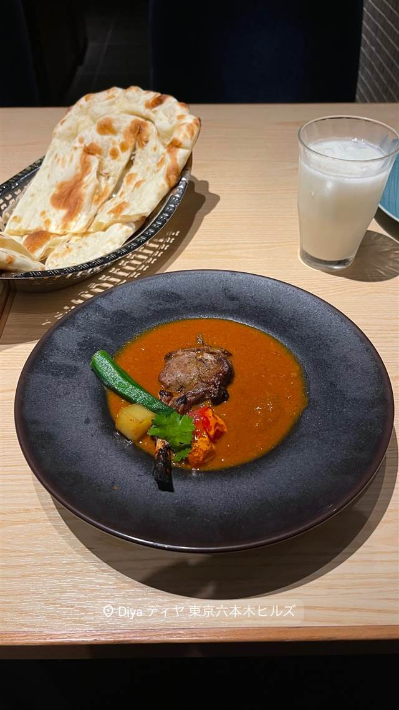

Sajilo Cafe（サジロカフェ）
36種のスパイスを効かせた化学調味料無添加のネパールカレー
SAJILO CAFE
2008年開業、建築士とネパール出身者が共同で開いたネパールカレー専門カフェ。店名の「Sajilo」はネパール語で「心地よい」という意味で、36種類のスパイスを使い化学調味料なしで仕上げるカレーとチーズナンが名物。ランチタイムは行列ができるほどの人気。
TRIVIA
豆知識
- 店名「Sajilo」はネパール語で「心地よい・気軽な」という意味
REVIEWS
世間の評判
3.59食べログ
チーズナンとバターチキンカレーの評判
- チーズナンやバターチキンカレーの美味しさを評価する声が多い
- おしゃれな内装とインド人スタッフの明るい接客が好評
- ランチタイムは混雑し待ち時間が長くなるという声がある
- 席数が20席と少なく現金のみという指摘もある
食べログ 口コミ762件
| 創業 | 2008年開業 |
|---|---|
| 看板 | ネパールカレーとチーズナン |
| こだわり | 化学調味料を使わず、36種類のスパイスでじっくり煮込んだ本格ネパールカレー。 |
| どこから | 23区の外れ・近郊 |
| 行くなら | 行列 |
| 営業時間 | 月〜金 11:30-15:30、18:00-23:00 土・日 11:30-23:00 |
| 予算 | 昼 ¥1,000～¥1,999 夜 ¥1,000～¥1,999 |
| 場所 | 吉祥寺駅 東京都武蔵野市吉祥寺本町1-36-8 |
| メモ | ランチタイムは平日・休日ともに行列ができる人気店。 |
食べたもの：カレーとナン
NEARBY
近い店・同じ系統の店
-
 カフェ 吉祥寺
カフェ ルミエール（Cafe Lumiere）
目の前でメレンゲを燃やして仕上げる焼き氷はここだけの独自スタイル
昼 ¥1,000～¥1,999 夜 ¥3,000～¥3,999
カフェ 吉祥寺
カフェ ルミエール（Cafe Lumiere）
目の前でメレンゲを燃やして仕上げる焼き氷はここだけの独自スタイル
昼 ¥1,000～¥1,999 夜 ¥3,000～¥3,999
-

インド・ネパール 六本木 DIYA 六本木ヒルズ店 六本木ヒルズ唯一のハラール認証、コルカタ名店直系のインドカレー 昼 ¥1,000～¥1,999 夜 ¥4,000～¥4,999 -
 インド・ネパール 下北沢
NAN STATION（ナンステーション）
20種のスパイスカレーとハチミツ香るハニーチーズナン
昼 ¥1,000～¥1,999 夜 ¥1,000～¥1,999
インド・ネパール 下北沢
NAN STATION（ナンステーション）
20種のスパイスカレーとハチミツ香るハニーチーズナン
昼 ¥1,000～¥1,999 夜 ¥1,000～¥1,999
-
 インド・ネパール 下北沢駅
バビシャー（Bhavishya）
おかわり自由のチーズナンとバターチキンカレー
昼 ¥1,000未満 夜 ¥1,000～¥1,999
インド・ネパール 下北沢駅
バビシャー（Bhavishya）
おかわり自由のチーズナンとバターチキンカレー
昼 ¥1,000未満 夜 ¥1,000～¥1,999
-
 インド・ネパール 白金高輪
サムラート カレーハウス 高輪店
日本に初めてバターチキンカレーを伝えた元祖の一皿
昼 ¥1,000～¥1,999 夜 ¥1,000～¥1,999
インド・ネパール 白金高輪
サムラート カレーハウス 高輪店
日本に初めてバターチキンカレーを伝えた元祖の一皿
昼 ¥1,000～¥1,999 夜 ¥1,000～¥1,999
- インド・ネパール Mother Indian